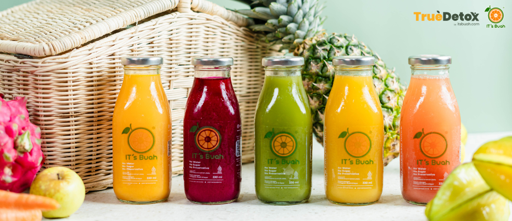
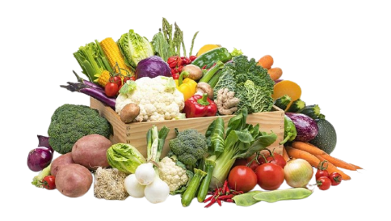
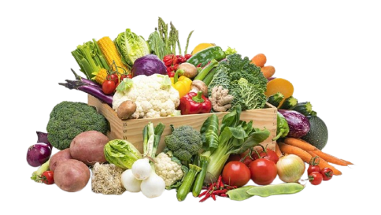

Manfaat jus alami untuk tubuh Anda tidak hanya membantu memenuhi kebutuhan vitamin dan mineral harian, tetapi juga berperan penting dalam menjaga keseimbangan nutrisi tubuh, meningkatkan sistem kekebalan, melancarkan pencernaan, membantu proses detoksifikasi alami, menjaga kesehatan kulit, serta memberikan energi dan kesegaran alami yang membuat tubuh terasa lebih ringan, bugar, dan siap menjalani aktivitas sehari-hari dengan lebih fokus dan produktif. 🍎🥬🥕
Tentang Kami
Kami adalah brand jus buah dan sayur segar yang menghadirkan minuman sehat dari bahan alami pilihan, diproses fresh setiap hari tanpa pengawet dan pemanis buatan. Dengan konsep praktis dan berkualitas, kami berkomitmen menghadirkan manfaat nyata bagi kesehatan dan aktivitas harian.
Melalui program kemitraan online, kami membuka peluang bagi siapa saja untuk mendapatkan penghasilan tambahan tanpa harus memiliki toko atau stok barang. Kami menyediakan sistem, produk, dan dukungan penjualan agar mitra dapat langsung berkembang bersama kami.
Bersama kami, mari sebarkan gaya hidup sehat sekaligus menciptakan peluang usaha yang #SehatBerdampak.

join dengan kami
Produk Sehat
Jus sayuran murni untuk energi sehari-hari.
Produk Cerdas
Kombinasi buah untuk nutrisi optimal.
Produk Tangguh
Jus jeruk dengan tambahan sayur segar. .
Testimoni Pelanggan
"Jusnya enak dan bikin badan lebih sehat! Terus beli deh."
- Bpk Alfendo, Jakarta
"Sehat cerdas tangguh, beneran! Anak saya jadi lebih cerdas."
- Bpk Budi, Bandung
"Rasanyaa enak bangettt, Rekomendasi dehhh."
- Ibu michelle, Semarang
"Tempat terbaik yang pernah saya beli adalah its buah."
- Ibu Mila, Jakarta
"Keren pelayanannya, EHC nya juga membantu."
- Bpk Ivan, Citayam
"Cocok buat kesehatan, rasanya juga enak bangett."
- Bpk Adam, Jakarta
Hubungi Kami
Tertarik bergabung? Hubungi kami sekarang dan jadilah bagian dari mitra #SehatBerdampak.
 
